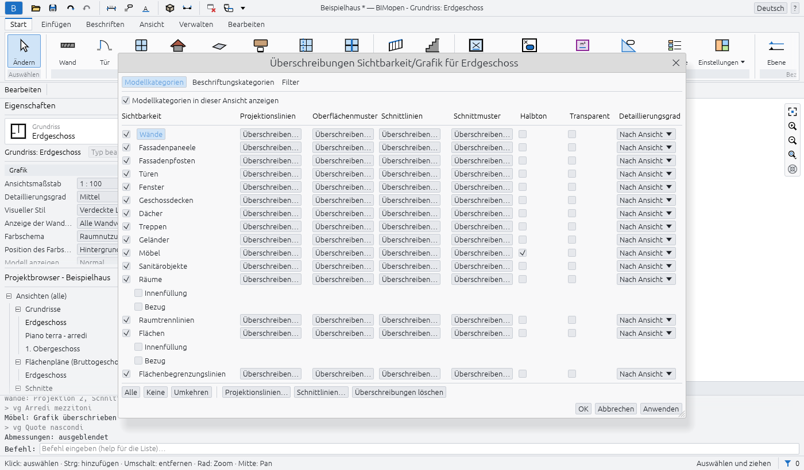

Ansichten und Grafik
Dieses Kapitel beschreibt die Ansichten des Modells, wie jede einzelne gezeichnet wird und wie sich ändern lässt, was eine Ansicht zeigt und wie: visuelle Stile, Maßstab und Detaillierungsgrad, der Ansichtsbereich eines Grundrisses, Zuschneidebereiche, Ausblenden und Isolieren, Sichtbarkeit/Grafik, Filter und Ansichtsvorlagen. Linienstärken, Linienmuster und Objektstile werden in denselben Begriffen von den Dialogen unter Verwalten ▸ Einstellungen des Programms beschrieben.
3D-Ansichten
Ansicht ▸ Erzeugen ▸ 3D-Ansicht ▸ Standard-3D-Ansicht öffnet die Standard-3D-Ansicht, {3D}, die das gesamte Modell einfasst; erneut geöffnet, zeigt sie das Modell so, wie es verlassen wurde. Ziehen Sie, um zu orbiten (oder Umschalt und die mittlere Maustaste), ziehen Sie mit der mittleren Maustaste, um zu schwenken, und drehen Sie das Rad, um am Cursor zu zoomen; siehe Die Benutzeroberfläche.
Um einen Ausschnitt zu behalten, wählen Sie Ansicht ▸ Erzeugen ▸ 3D-Ansicht ▸ Ansicht speichern: Geben Sie einen Namen ein und drücken Sie die Eingabetaste. Die neue Ansicht erscheint unter 3D-Ansichten im Projektbrowser und öffnet sich sofort; sie behält den Ausschnitt, mit dem sie verlassen wird. Dasselbe bewirkt das Umbenennen von {3D} im Projektbrowser (Rechtsklick ▸ Umbenennen…): {3D} wird zu einer benannten Ansicht, und die nächste Standard-3D-Ansicht ist eine neue {3D}.
Ein gewähltes Element wird blau überlagert und halb durchsichtig dargestellt, seine Kanten blau: Was dahinter liegt, bleibt sichtbar.
Geschossdecken schneiden die Wände, die sie durchqueren: Wo eine Decke eine Wand kreuzt, endet die Wand darunter und setzt sich darüber fort, sodass Deckenkante und Wandfläche eine einzige Fläche bilden.
Visuelle Stile
Die Schaltfläche Visueller Stil der Ansichtssteuerungsleiste am unteren Rand jedes Ansichtsfensters bietet:
| Stil | Was gezeichnet wird |
|---|---|
| Drahtmodell | Alle Kanten, auch die hinter anderen Flächen; keine Flächen |
| Verdeckte Linie | Flächen in der Papierfarbe und die Kanten davor |
| Schattiert | Beleuchtete Flächen in der Farbe ihres Materials |
| Schattiert mit Kanten | Wie Schattiert, mit den Kanten davor |
| Einheitliche Farben | Flächen in der Farbe ihres Materials, unabhängig vom Licht stets gleich |
Der Stil gehört zur Ansicht und lässt sich rückgängig machen. Die Tastaturkürzel WF, HL und SD wählen Drahtmodell, Verdeckte Linie und Schattiert.
Die Kanten sind die tatsächlichen: dort, wo zwei Flächen im Winkel aufeinandertreffen, sowie der Umriss jeder Fläche und jeder Öffnung. Eine Wand mit einem Fenster zeigt ihren eigenen Umriss und den des Fensters, aber keine Linie dort, wo die Teile der Wand aneinanderstoßen.
Auch Grundrisse, Schnitte und Gebäudeansichten haben einen visuellen Stil. Ein Grundriss wird in Verdeckte Linie gezeichnet, bis ein anderer Stil gewählt wird; in Schattiert nehmen seine Geschossdecken, von oben gesehen, die Farbe ihres Materials an, und die Flächen von Schnitten und Gebäudeansichten erhalten die Farben ihrer Materialien.

Sonne und Schatten
In einer 3D-Ansicht hat die Ansichtssteuerungsleiste zwei weitere Schaltflächen:
- Schatten ein / Schatten aus: In den schattierten Stilen beleuchtet die Sonne das Modell und wirft Schatten, von den Wänden auf die Geschossdecken, von den Dachüberständen auf die Wände;
- die Schaltfläche für die Sonnenbahn: Sonnenbahn ein zeichnet einen Kompassring auf den Boden rund um das Modell, mit den vier Himmelsrichtungen, der Bahn der Sonne im Tagesverlauf als Bogen darüber und der Sonne an ihrer aktuellen Stelle. Sonnenstandeinstellungen… legt fest, wo die Sonne steht:
| Modus | Was sie benötigt |
|---|---|
| Standbild | Breitengrad, Längengrad, Zeitzone (UTC), Tag und Monat sowie die Uhrzeit: Daraus ergibt sich der Sonnenstand |
| Beleuchtung | Azimut (Grad im Uhrzeigersinn von Norden) und Höhe |
Jede Ansicht hat ihre eigenen Sonneneinstellungen, und die Änderungen lassen sich rückgängig machen. Schatten werden vom 3D-Fenster auf der Grafikkarte gezeichnet; Grundrisse, Schnitte, Gebäudeansichten und exportierte Bilder zeigen sie noch nicht.
Grundrisse und ihr Ansichtsbereich
Ansicht ▸ Erzeugen ▸ Grundrissansichten ▸ Grundriss öffnet Neuer Grundriss: Wählen Sie die Ebenen und den Maßstab, dann OK. Ist Vorhandene Ansichten nicht duplizieren eingeschaltet, werden die Ebenen übergangen, die bereits einen Grundriss haben; schalten Sie es aus, um einen zweiten Grundriss einer Ebene zu erstellen.
Ein Grundriss ist ein horizontaler Schnitt durch das Modell auf der Schnittebene seines Ansichtsbereichs. Wände, die die Schnittebene kreuzen, werden geschnitten gezeichnet, mit den Schnittmustern der Materialien ihrer Schichten bei den Detaillierungsgraden Mittel und Fein; tiefer liegende Wände und die Geschossdecken der Ebene sind von oben zu sehen.
Um den Ansichtsbereich zu ändern, wählen Sie nichts aus (damit Eigenschaften die Ansicht zeigt) und dann Ansichtsbereich ▸ Bearbeiten…. Jede Ebene wird von einer Ebene aus gemessen, mit einem Versatz:
| Ebene | Bezugsebene |
|---|---|
| Oben | Die eigene Ebene des Grundrisses (Zugehörige Ebene), die Ebene darüber, eine Ebene nach Namen oder Unbegrenzt |
| Schnittebene | Immer die eigene Ebene des Grundrisses |
| Unten | Die eigene Ebene des Grundrisses, die Ebene darunter oder eine Ebene nach Namen |
| Ansichtstiefe | Wie Unten, oder Unbegrenzt |
OK setzt die vier Ebenen gemeinsam, als eine einzige Änderung. Sie müssen in der Reihenfolge von oben nach unten bleiben (oben, Schnittebene, unten, Ansichtstiefe): Andernfalls erklärt das Fenster, was nicht stimmt, und bleibt geöffnet. Geschossdecken unterhalb von Unten, bis zur Ansichtstiefe, werden dahinter in dünnen Linien gezeichnet; ebenso Geschossdecken, die ein wenig unter Unten liegen, etwa eine abgesenkte Decke, auch wenn die Ansichtstiefe auf Unten liegt.
Heller und dunkler Hintergrund
Optionen ▸ Design ▸ Dunkel (oder Hintergrundfarbe umkehren) macht den Zeichenbereich dunkel. Wie bei einem umgekehrten Hintergrund werden schwarze Linien, Texte und Muster hell gezeichnet, Farben behalten ihren Farbton, und Farbfüllungen wie die der Räume werden abgedunkelt, damit der Text darüber lesbar bleibt. Optionen ▸ Größe der Benutzeroberfläche vergrößert die gesamte Benutzeroberfläche von 100 % bis 250 %, zusätzlich zur Skalierung des Bildschirms selbst: nützlich bei Bildschirmen mit vielen Pixeln. Die Einstellung bleibt für den nächsten Start erhalten.
Eine Ansicht über ihr Symbol öffnen
Doppelklicken Sie auf das Symbol einer Ansicht, um sie zu öffnen: eine Schnittlinie oder ihren Kopf, ein Gebäudeansichtssymbol, die Begrenzung eines Ausschnitts (ein Verweisausschnitt öffnet die Ansicht, auf die er verweist), die Linie einer Ebene in einem Schnitt oder einer Gebäudeansicht (ihr Grundriss wird geöffnet) oder eine auf einem Plan platzierte Ansicht. Das Fenster der Ansicht wird zum aktiven.
Maßstab, Detaillierungsgrad und Zuschneidebereich
Die Ansichtssteuerungsleiste zeigt den Ansichtsmaßstab und den Detaillierungsgrad der Ansicht (auch in 3D-Ansichten).
- Bei kleinerem Maßstab wird das Modell auf dem Papier kleiner gezeichnet, während Texte, Tags und Symbole ihre Größe auf dem Papier behalten: Bei 1:200 deckt ein Text doppelt so viel vom Modell ab wie bei 1:100.
- Bei Grob ist eine geschnittene Wand eine einzige Füllung; bei Mittel und Fein werden ihre Schichten sichtbar, jede mit ihrem Material.
Schnitte schneiden das Modell auf dieselbe Weise. Wände, Geschossdecken und Dächer, die sich im Schnitt treffen, werden als Ganzes gezeichnet: eine dicke Umrisslinie um sie herum, eine dünne Linie nur dort, wo zwei Materialien aufeinandertreffen, keine zwischen Teilen desselben Materials; an ein Dach angehängte Wände enden unter ihm. Jede geschnittene Schicht hat das Schnittmuster ihres Materials (bei Grob das Füllmuster für grobe Darstellung des Typs in seiner Füllfarbe für grobe Darstellung, einstellbar bei Wand-, Geschossdecken- und Dachtypen; sonst eine einzige Volltonfüllung). Möbel und Sanitärinstallationen werden nie geschnitten: Sie sind ganz zu sehen. Ein Fenster wird mit seinem Rahmen in der dicken Schnittlinie und seinem Glas in dünnen Linien geschnitten; was hinter dem Schnitt liegt, wird mit den dünneren Projektionslinien gezeichnet.
Ansicht zuschneiden beschneidet die Ansicht auf ihren Zuschneidebereich, Zuschneidebereich anzeigen zeichnet den Bereich; ziehen Sie an seinen Kanten, um die Größe zu ändern. Um die Größe einzugeben: Eigenschaften ▸ Zuschnittgröße ▸ Bearbeiten…, dann Breite und Höhe; der Bereich behält seine Mitte.
Ausblenden und Isolieren
Temporär ausblenden/isolieren (die Brille in der Ansichtssteuerungsleiste) wirkt auf die gewählten Elemente, nur in der aktiven Ansicht, und ändert das Projekt nicht:
| Befehl | Kürzel | Was sichtbar bleibt |
|---|---|---|
| Element isolieren | HI |
Nur die gewählten Elemente |
| Element ausblenden | HH |
Alles außer den gewählten Elementen |
| Kategorie isolieren | IC |
Nur die Kategorien der gewählten Elemente |
| Kategorie ausblenden | HC |
Alles außer diesen Kategorien |
Die Ansicht erhält einen farbigen Rahmen. Jede Anwendung schränkt das Gezeigte weiter ein: Wird ein Element und danach ein weiteres ausgeblendet, sind beide ausgeblendet. Temporäres Ausblenden/Isolieren zurücksetzen (HR) zeigt wieder alles; Ausblenden/Isolieren auf Ansicht anwenden blendet dauerhaft aus, was vorübergehend ausgeblendet war.
Um in der Ansicht dauerhaft auszublenden, wählen Sie die Elemente und dann Rechtsklick ▸ In Ansicht ausblenden ▸ Elemente oder Kategorie, oder Ansicht ▸ In Ansicht ausblenden in der kontextbezogenen Registerkarte, oder geben Sie EH (Elemente) beziehungsweise VH (Kategorie) ein.
Verdeckte Elemente anzeigen (die Glühbirne in der Ansichtssteuerungsleiste, oder RH) umrahmt die Ansicht magentafarben und zeigt das Ausgeblendete in Magenta, den Rest im Halbton. Ein ausgeblendetes Element lässt sich dann wählen und wieder einblenden: Rechtsklick ▸ In Ansicht einblenden ▸ Elemente (oder Kategorie). Klicken Sie erneut auf die Glühbirne oder geben Sie RH ein, um den Modus zu verlassen.
Sichtbarkeit/Grafik
Ansicht ▸ Grafik ▸ Sichtbarkeit/Grafik (oder VG, oder Eigenschaften ▸ Überschreibungen Sichtbarkeit/Grafik ▸ Bearbeiten…) zeigt für die aktive Ansicht eine Zeile je Kategorie:
- das Kontrollkästchen blendet die Kategorie ein oder aus; Modellkategorien in dieser Ansicht anzeigen blendet alle ein oder aus;
- Projektionslinien und Schnittlinien: Überschreiben… legt Stärke, Farbe und Muster fest;
- Oberflächenmuster und Schnittmuster: die Muster des Materials, ausgeblendet, in einer anderen Farbe oder durch ein anderes Füllmuster ersetzt;
- Halbton mischt die Linien mit dem Hintergrund;
- Transparent macht die Oberflächen in der 3D-Ansicht durchsichtig;
- Detaillierungsgrad zeichnet die Kategorie mit einem anderen Grad als die Ansicht.
Überschreibungen löschen setzt die gewählten Zeilen auf die Objektstile zurück. Änderungen sind sofort zu sehen: Anwenden behält sie und lässt das Fenster offen, Abbrechen (oder das × des Fensters) nimmt zurück, was nicht angewendet wurde, OK behält sie und schließt.

Ein einzelnes Element kann in einer Ansicht eigene Grafik haben: Wählen Sie es und dann Rechtsklick ▸ Grafik in Ansicht überschreiben ▸ Nach Element… (oder das Feld Ansicht der kontextbezogenen Registerkarte). Ansichtsspezifische Elementgrafiken bietet Sichtbar, Halbton, Transparent, die Oberflächen- und Schnittmuster sowie die Projektions- und Schnittlinien. Sie gelten nur in dieser Ansicht, über denen der Kategorie und der Filter.
Filter
Ansicht ▸ Grafik ▸ Filter listet die Filter des Projekts auf: Neu, Duplizieren, Umbenennen, Löschen. Ein Filter hat Kategorien und bis zu vier Regeln für deren Parameter, die ein Element alle erfüllen muss.
In Sichtbarkeit/Grafik ▸ Filter wendet Hinzufügen einen Filter auf die Ansicht an; seine Zeile legt dann Sichtbarkeit, Linien, Halbton und Transparent für die Elemente fest, die ihn erfüllen. Wo Filter sich widersprechen, gewinnt der weiter oben in der Liste: Nach oben und Nach unten verschieben den gewählten Filter.
Ansichtsvorlagen
Ansicht ▸ Grafik ▸ Ansichtsvorlagen ▸ Vorlage aus aktueller Ansicht erstellen speichert Maßstab, Detaillierungsgrad, visuellen Stil, Ansichtsbereich und Grafik der Ansicht unter einem Namen als Vorlage. Ansichtsvorlagen ▸ Vorlage auf aktuelle Ansicht anwenden überträgt sie auf eine andere Ansicht derselben Art: einen Grundriss (auch einen zweiten Grundriss einer Ebene), einen Schnitt oder eine Gebäudeansicht oder eine 3D-Ansicht. Eine Ansicht folgt späteren Änderungen ihrer Vorlage nicht, bis diese erneut angewendet wird, und die Grafik einzelner Elemente ist nie Teil einer Vorlage.
Ansichten verwalten
Klicken Sie im Projektbrowser mit der rechten Maustaste auf eine Ansicht:
- Ansicht duplizieren ▸ Duplizieren kopiert die Ansicht mit ihren Eigenschaften; Mit Detaillierung duplizieren kopiert auch ihre Bemaßungen, Texte, Tags und 2D-Details. Die Kopie öffnet sich;
- Umbenennen… fragt nach dem neuen Namen (Ansicht umbenennen); Namen bleiben unter den Ansichten eindeutig.
Ansicht ▸ Fenster ▸ Nebeneinander zeigt alle geöffneten Ansichten nebeneinander und füllt den Zeichenbereich: Bei drei Fenstern liegt das aktive links in voller Höhe und zwei sind rechts übereinander angeordnet.